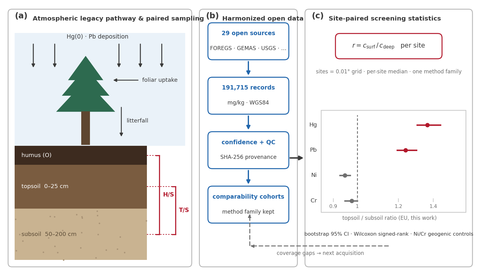
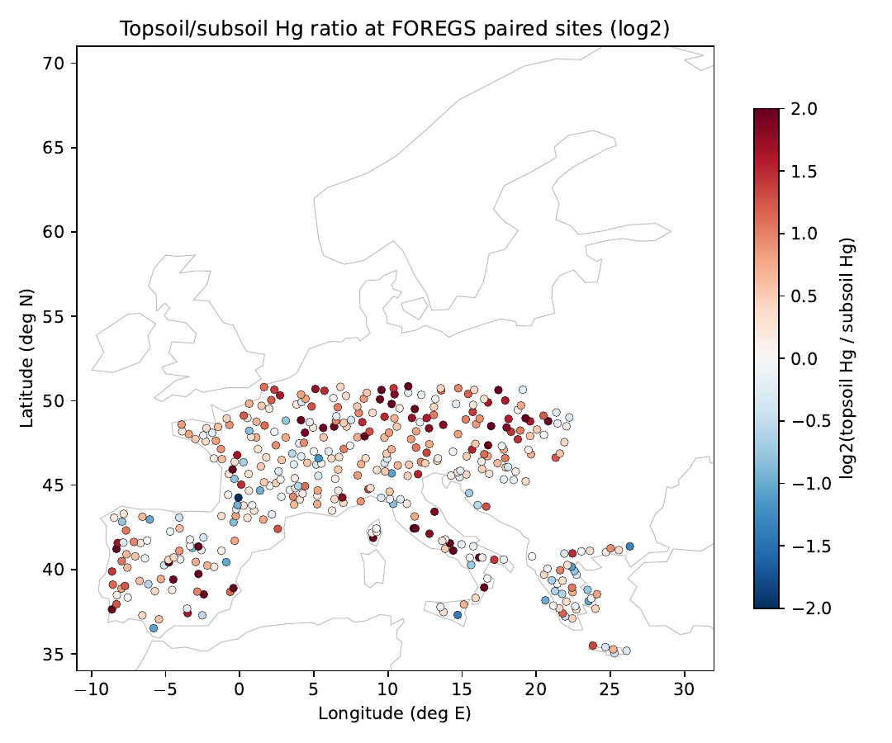

P1
欧洲土壤剖面中的汞、铅遗留富集：按分析方法分层检验
科学问题过去一个世纪的大气 Hg/Pb 沉降在欧洲土壤中留下了多强的垂向信号？混合不同分析方法是否会造成假象？
发现：表土与底土浓度比显示，Hg 为 1.36、Pb 为 1.24，均有显著表层富集；地质对照元素 Ni、Cr 则均 ≈1，支持该信号主要来自大气沉降，而非母岩差异。腐殖质层 Hg 达 5.3×，与植被介导的沉降和表层截留相符。由于同一元素跨方法测定可差 3 倍，所有统计均先按方法族分层；独立 LUCAS 调查得到的欧洲表土 Hg 中位数也与本研究一致（43.9 vs 38.3 µg/kg）。

